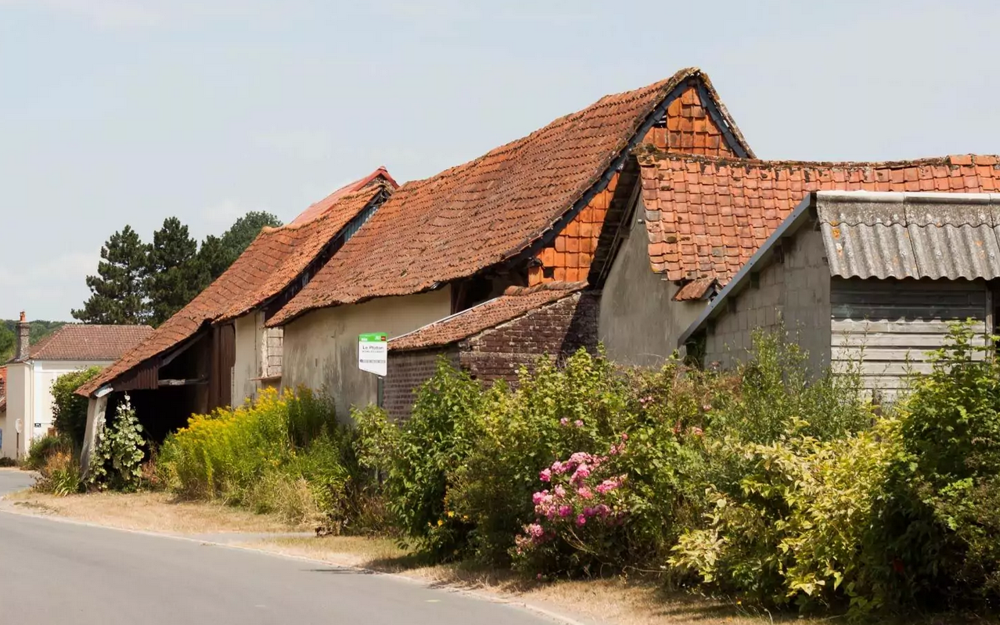

Terroir
Partagez notre passion pour le terroir et ses produits.
La Porte du Hainaut, c'est un territoire gourmand, tout un art de vivre avec les plaisirs de la table, le raffinement de la haute cuisine, l'authenticité et le goût intact des produits du terroir.
Les fins gourmets sauront apprécier la qualité des restaurants et les produits du terroir ont autant de saveurs, d'odeurs que des charmeurs de papilles... De plus, les Chefs de La Porte du Hainaut ont du talent ! Essayez les délicieuses recettes originales ou traditionnelles qu'ils vous proposent... Déjeuner ou dîner entre amis, séminaires, repas d'affaires, un large choix de tables et d'ambiance vous est proposé. Pour connaître les différents restaurant sur le territoire de La Porte du Hainaut rendez-vous sur le site de l'Office du tourisme.
Le Picard, qui est l'une des "langues de France", parlé sur la plus grande partie de la région, ainsi que dans la province belge du Hainaut, bénéficie d'une faveur grandissante de la part du public régional. Traditionnellement langue de l'intimité, langue de proximité et langue du monde du travail, il accède maintenant à l'espace public par le livre, la radio et le spectacle.
L'essentiel du travail de promotion de cette langue repose sur les associations comme Insanne dans le Nord-Pas-de-Calais, Tertous en Picardie, ou la Maison de la Culture de Tournai en Belgique et l'Office Culturel Régional de Picardie.
Les Premières Journées Interrégionales de la Langue Picarde initiées en 2005 par ces associations et par la Communauté d'Agglomération de La Porte du Hainaut, soutenues par les Conseils régionaux Nord-Pas de Calais et Picardie, ont donc été l'occasion de faire dialoguer tous les acteurs soucieux de valoriser cette langue régionale, à travers une journée d'étude organisée sur le Site minier de Wallers-Arenberg . Elle a été suivie d'animations festives le samedi au Théâtre Municipal de Denain.
L'objectif de ces journées est de faire émerger les possibilités d'une collaboration interrégionale et transfrontalière autour du Picard et de la diversité linguistique, afin de renforcer l'efficacité des actions de chacun des partenaires. Pour en savoir plus, vous pouvez consulter les sites maisonculturetournai.com et languepicarde.fr.
Depuis 2008, une Maison Interrégionale du Picard À mon Lalie, gérée par la Fédération Insanne, existe à Saint-Amand-les-Eaux. Régulièrement, elle accueille un événement culturel en Picard ou autour de cette langue : conférence, concert, lecture, veillée... Le lieu accueille aussi un centre de Documentation dans lequel on trouve de nombreux ouvrages consacrés au Picard.
Malgré des architectures et des usages très différents, fermes, cités minières, maisons de ville ou lotissements ont une ligne commune : la brique et la tuile.
Ces matériaux, autrefois issus du sous-sol local, perdurent dans l'habitat d'aujourd'hui. Ils teintent de rouge et d'orange les paysages verdoyants des prairies, champs ou jardins urbains...